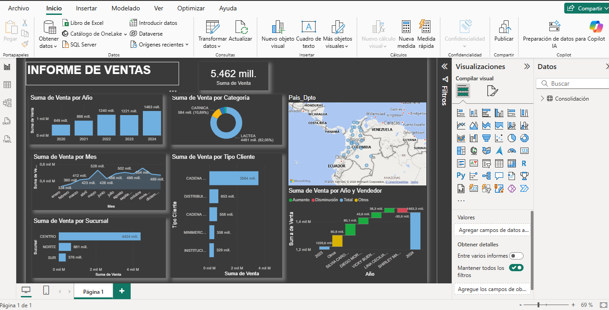

Power BI — Dashboard de Ventas: análisis y buenas prácticas
Este dashboard fue diseñado en Power BI para centralizar la información de ventas y brindar una visión clara a la gerencia. A través de indicadores clave y visualizaciones interactivas, permite un análisis profundo de los resultados.
📊 Objetivo
El objetivo principal es optimizar la toma de decisiones estratégicas, facilitando la detección de tendencias, oportunidades de crecimiento y posibles riesgos.
📷 Vista previa
⚡ Indicadores principales
- Ingresos totales.
- Crecimiento porcentual vs. periodo anterior.
- Distribución de ventas por categoría.
- Rentabilidad por línea de negocio.
- Tendencia de clientes activos.
🌐 Dashboard interactivo
Aquí puedes ver el dashboard y navegar entre sus pestañas:
👉 Si quieres verlo en una ventana completa, haz clic aquí .